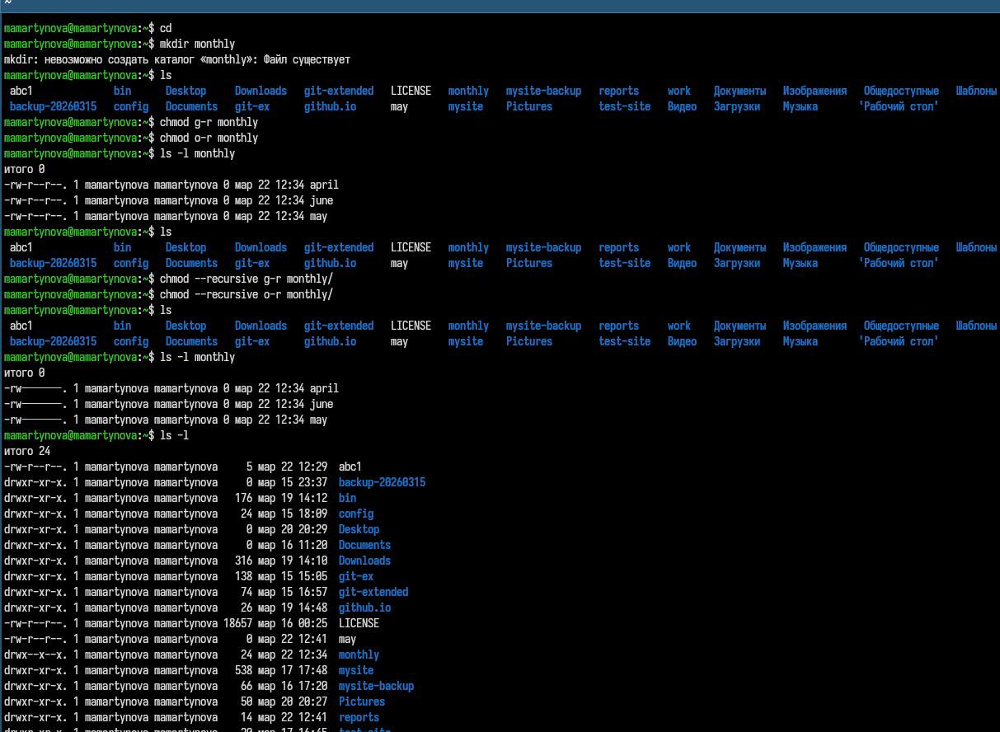
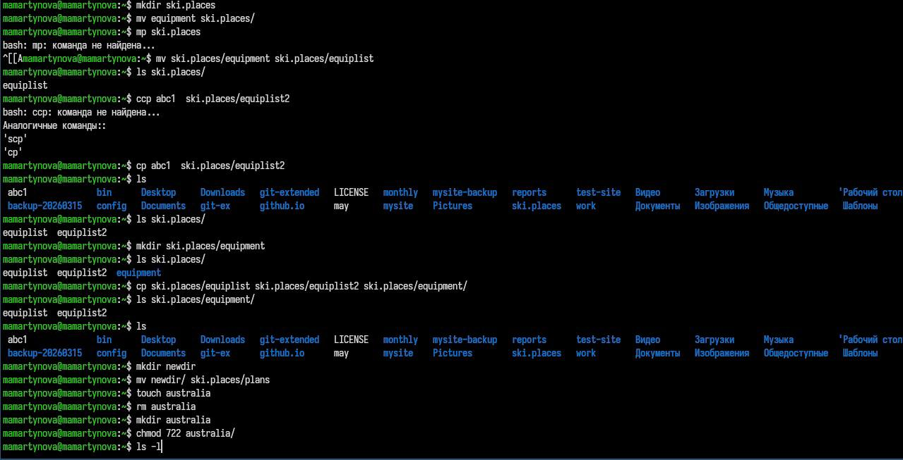
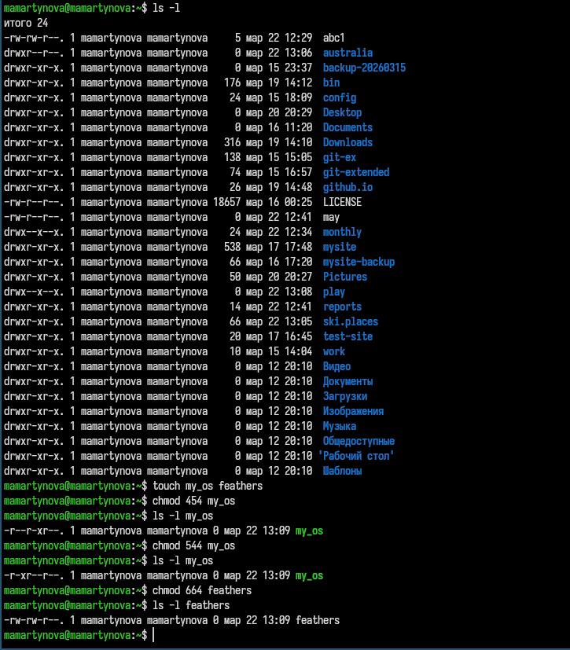
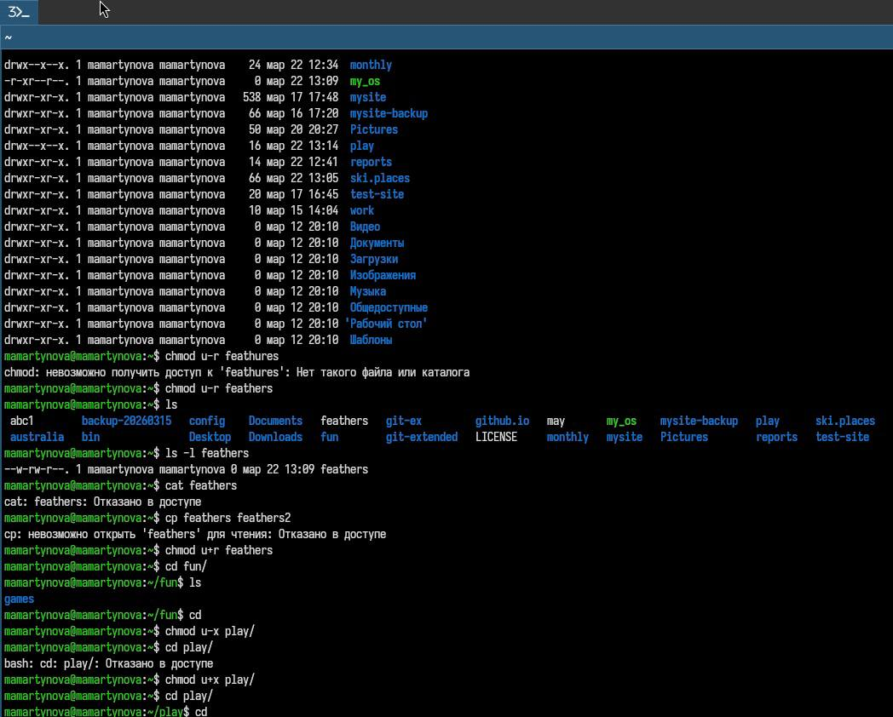

Изучение структуры файловой системы Linux, включая ее иерархию,
принципы именования и назначение системных каталогов. Формирование
практических навыков использования команд для управления файлами и
каталогами, контроля над процессами и задачами, а также для мониторинга
дискового пространства и выполнения операций по обслуживанию файловой
системы.
2. Задание
Выполните все примеры, приведённые в первой части описания
лабораторной работы.
Выполните следующие действия, зафиксировав в отчёте по лабораторной
работе используемые при этом команды и результаты их выполнения: 2.1.
Скопируйте файл /usr/include/sys/io.h в домашний каталог и назовите его
equipment. Если файла io.h нет, то используйте любой другой файл в
каталоге /usr/include/sys/ вместо него. 2.2. В домашнем каталоге
создайте директорию ~/ski.plases. 2.3. Переместите файл equipment в
каталог ~/ski.plases. 2.4. Переименуйте файл ~/ski.plases/equipment в
~/ski.plases/equiplist. 2.5. Создайте в домашнем каталоге файл abc1 и
скопируйте его в каталог ~/ski.plases, назовите его equiplist2. 2.6.
Создайте каталог с именем equipment в каталоге ~/ski.plases. 2.7.
Переместите файлы ~/ski.plases/equiplist и equiplist2 в каталог
~/ski.plases/equipment. 2.8. Создайте и переместите каталог ~/newdir в
каталог ~/ski.plases и назовите его plans.
Определите опции команды chmod, необходимые для того, чтобы
присвоить перечис- ленным ниже файлам выделенные права доступа, считая,
что в начале таких прав нет: 3.1. drwxr–r– … australia 3.2. drwx–x–x …
play 3.3. -r-xr–r– … my_os 3.4. -rw-rw-r– … feathers При необходимости
создайте нужные файлы.
Проделайте приведённые ниже упражнения, записывая в отчёт по
лабораторной работе используемые при этом команды: 4.1. Просмотрите
содержимое файла /etc/password. 4.2. Скопируйте файл ~/feathers в файл
~/file.old. 4.3. Переместите файл ~/file.old в каталог ~/play. 4.4.
Скопируйте каталог ~/play в каталог ~/fun. 4.5. Переместите каталог
~/fun в каталог ~/play и назовите его games. 4.6. Лишите владельца файла
~/feathers права на чтение. 4.7. Что произойдёт, если вы попытаетесь
просмотреть файл ~/feathers командой cat? 4.8. Что произойдёт, если вы
попытаетесь скопировать файл ~/feathers? 4.9. Дайте владельцу файла
~/feathers право на чтение. 4.10. Лишите владельца каталога ~/play права
на выполнение. 4.11. Перейдите в каталог ~/play. Что произошло? 4.12.
Дайте владельцу каталога ~/play право на выполнение.
Прочитайте man по командам mount, fsck, mkfs, kill и кратко их
охарактеризуйте, приведя примеры.
3. Теоретическое введение
В Linux файловая система объединяет файлы и каталоги, при этом
каждому физическому носителю соответствует своя собственная файловая
система. К наиболее часто используемым типам относятся ext2, ext3, ext4,
ReiserFS, XFS, FAT и NTFS. Получить информацию о смонтированных в
системе файловых системах можно с помощью команды mount, введенной без
аргументов.
4. Выполнение лабораторной
работы
Повторяю примеры приведенные в лабораторной работе. (рис. 1)

Повтор примеров
Работаю с командами mv и cp (рис. 2)

Команды mv и cp
Меняю права доступов для файлов и каталогов. (рис. 3)

Изменение прав доступа
Проверка измененных прав доступа. (рис. 4)

Проверка прав доступа
ВДокументация по командам. (рис. 5)
Просмотр документации
5. Выводы
В ходе работы была изучена файловая система Linux: ее структура,
принципы именования и назначение каталогов. Освоены практические навыки
работы с командами для управления файлами и каталогами, контроля над
процессами и задачами, а также для мониторинга использования дискового
пространства и обслуживания файловой системы.